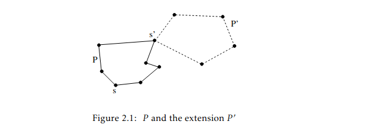

22 CHAPTER 2. GRAPHS
Theorem 2.3 (Existence of an Eulerian cycle.) A connected graph G(V,E) has an Eulerian cycle if and only if the degree of each vertex is even.
The intuition behind the proof is that when you arrive in a vertex, you can leave again because the degree is even. It therefore does not matter which path you follow, as long as you don't return to the starting point too soon. Even if you did, you can still mend the path.
Proof.
=> In a connected graph with an Eulerian cycle, the cycle connects all vertices as there is a path from each vertex to each other vertex and the cycle covers all paths. While traversing the cycle, we leave every vertex in which we arrive, and since all edges are traversed by the cycle, the degree of each vertex is even.
<=> Construct a cycle P: start from any vertex s, follow any edge incident on s; from then on extend the partial path with any edge incident on the most recently added vertex, never using a previously used edge. Repeat until there are no more edges to choose from. Since the degree of each vertex is even, the just constructed P is a cycle starting in s and arriving at the other end. If P contains all edges from G, the theorem is proven. Otherwise, there exists a vertex s' on the path P from which an unused edge leaves (explained why!). Construct a cycle P' starting at s' not using any edges from P (why is this possible?). Then add P' to P: now you have a larger cycle. One can repeat the procedure until there are no more unused edges. Figure 2.1 illustrates the construction.
